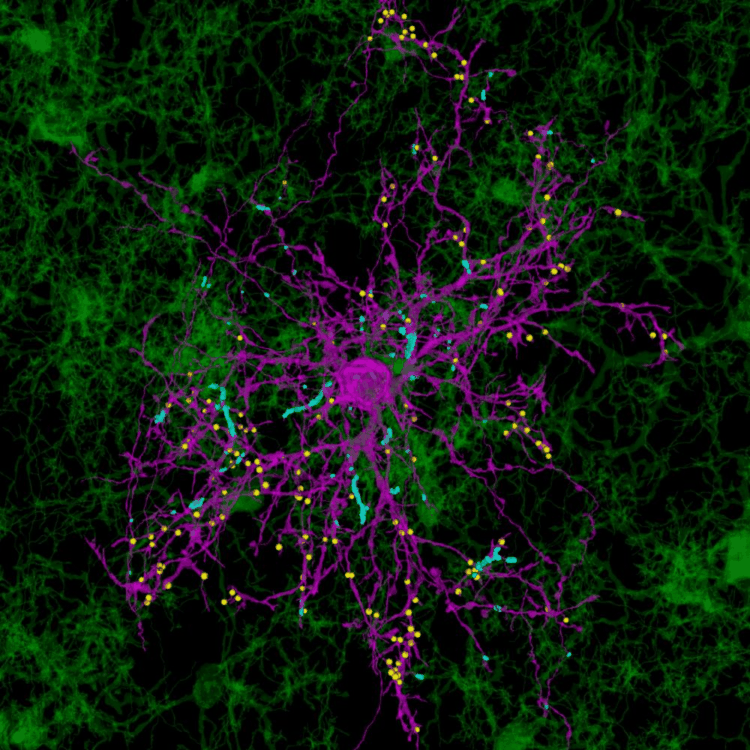

Cold Spring Harbor Laboratory & HHMI
Austin Ferro
PhD
I am a senior postdoctoral fellow in the Cheadle Lab studying how glial cells sculpt and maintain neural circuits. My work spans glial biology, neuro-immune interactions, and synaptic plasticity — using advanced imaging approaches to watch cells interact in the living brain.

OPC–microglia contacts & synapses · serial TEM reconstruction
Research
Understanding how glial cells build, maintain, and remodel the brain's wiring
OPC–Synapse Interactions
Oligodendrocyte precursor cells engage in activity-dependent phagocytic engulfment of synapses during development and experience-dependent plasticity. I develop high-precision imaging and quantification tools to measure this process with single-synapse resolution.
Microglia & Neural Circuit Maturation
Microglia are dynamic sentinels of neural circuits. Using live two-photon imaging in awake mice, I observe how microglial surveillance and synaptic interactions are regulated by sensory experience in the developing visual cortex.
Glia in Neurodegeneration
My PhD work (Cvetanovic Lab, U Minnesota) established that Bergmann glia undergo biphasic gene expression changes in spinocerebellar ataxia type 1, shifting from neuroprotective to pathological states. These findings revealed glial-specific therapeutic targets in cerebellar ataxia.
Techniques: Single & multi-photon in vivo imaging · Electron microscopy · Expansion microscopy · Single-cell RNA-seq · Viral circuit tracing · Mouse behavioral paradigms · Quantitative image analysis (FIJI/Python)
Selected Publications
Full publication list on Google Scholar
-
2026
Fn14 is an activity-dependent, Bmal1-regulated cytokine receptor that induces rod-like microglia and restricts neuronal activity in vivo
Cell Reports45(2):116926
Ferro A, Vita DJ, Fallon T, Arshad A, Boyd L, Stanley T, Lin Q, Berisha A, Vrudhula U, Gomez AM, Sanchez-Martin I, Borniger JC, Cheadle L
doi:10.1016/j.celrep.2026.116926 ↗ -
2024
High-confidence and high-throughput quantification of synapse engulfment by oligodendrocyte precursor cells
Nature ProtocolsMethods
Kahng JA, Xavier AM, Ferro A, Tang SX, Auguste YSS, Cheadle L
doi:10.1038/s41596-024-01048-1 ↗ -
2022
Oligodendrocyte precursor cells engulf synapses during circuit remodeling in mice
Nature Neuroscience★ Equal contributions
Ferro A*, Auguste YSS*, Kahng JA, Xavier AM, Dixon JR, Vrudhula U, Nichitiu AS, Rosado D, Wee TL, Pedmale UV, Cheadle L (* equal contributions)
doi:10.1038/s41593-022-01170-x ↗
CV Highlights
Full CV available for download above
Positions
-
2021–Present
Senior Postdoctoral Fellow
Cheadle Lab · Cold Spring Harbor Laboratory & HHMI
Glial control of synaptic plasticity; OPC–synapse engulfment; live two-photon imaging in awake mice
-
2015–2020
PhD, Neuroscience
Cvetanovic Lab · University of Minnesota
Thesis: Role of microglia and astrocytes in spinocerebellar ataxia type 1. F31 NIH Fellow.
-
2011–2015
B.A., Neuroscience
Skidmore College
Awards & Funding
-
2018
F31 NS103392-01A1 — Ruth L. Kirschstein NRSA
National Institutes of Health
-
2018
Young Investigator Grant
National Ataxia Foundation
-
2018
Sping & Ying Ngoh Lin Award for Research Independence
University of Minnesota
-
2018
1st Place Poster — Wallin Neuroscience Discovery Day
University of Minnesota
-
2018
Hot Chair Travel Grant
National Ataxia Foundation
-
2017
Stark Award for Advanced Scholarship
University of Minnesota
Technical Skills
Imaging
- Two-photon in vivo imaging
- Confocal microscopy
- Electron microscopy
- Expansion microscopy
- Light-sheet microscopy
Molecular / Cellular
- Single-cell RNA-seq
- Viral circuit tracing
- Immunohistochemistry
- Mouse genetics & surgery
- Cell culture
Analysis
- FIJI / ImageJ
- Python (image analysis)
- R (statistics)
- Imaris 3D rendering
Disease Models
- Spinocerebellar ataxia
- Visual cortex plasticity
- Neuro-immune models
Get in Touch
I am actively seeking faculty and senior scientist positions. If you're interested in discussing my research or potential opportunities, please reach out.
I'm also happy to discuss potential collaborations in glial biology, advanced imaging, or neurodegenerative disease.